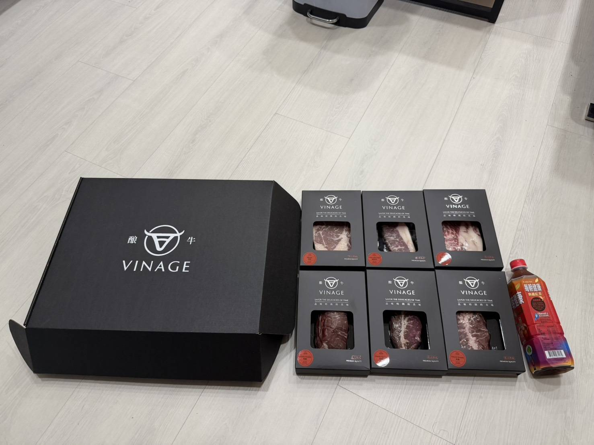
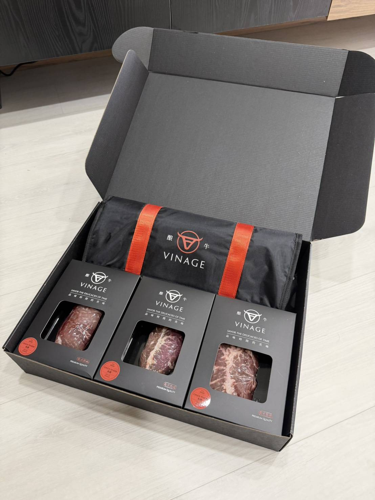
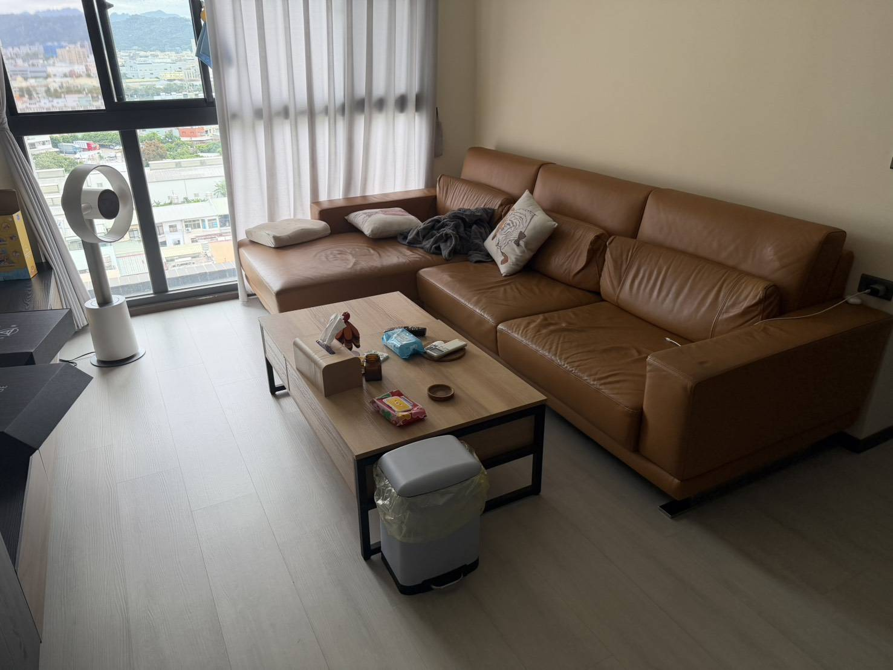
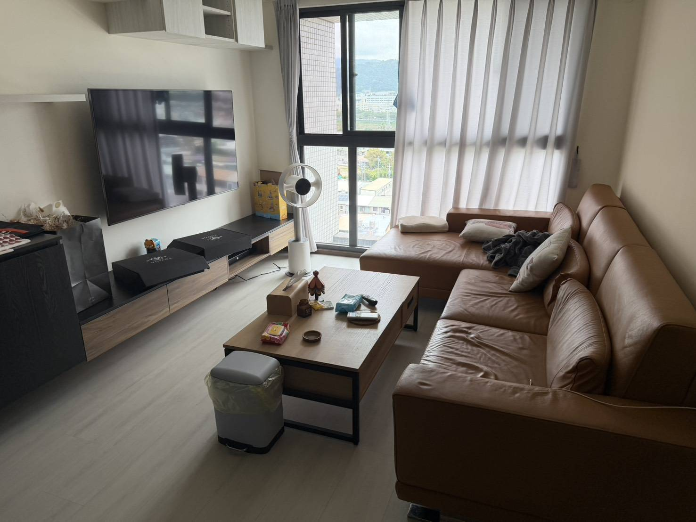
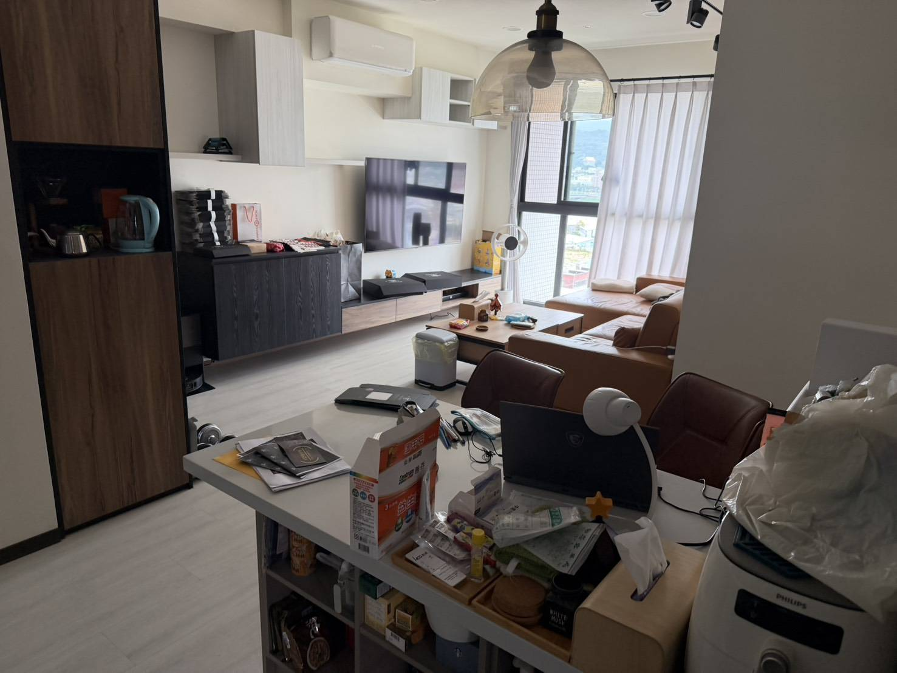
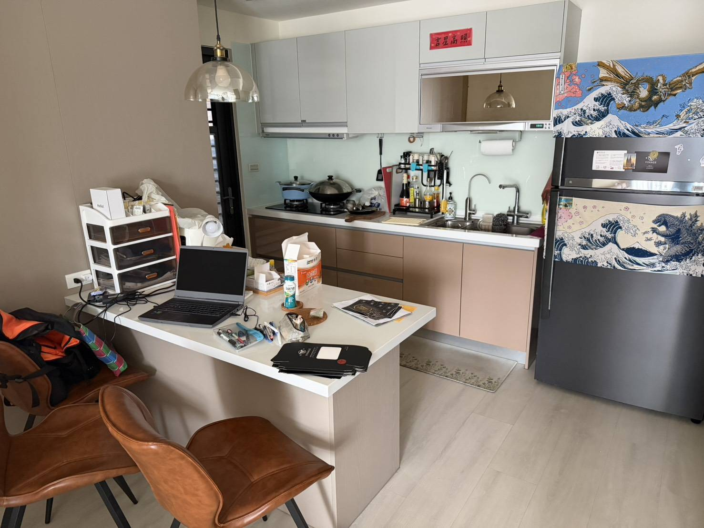
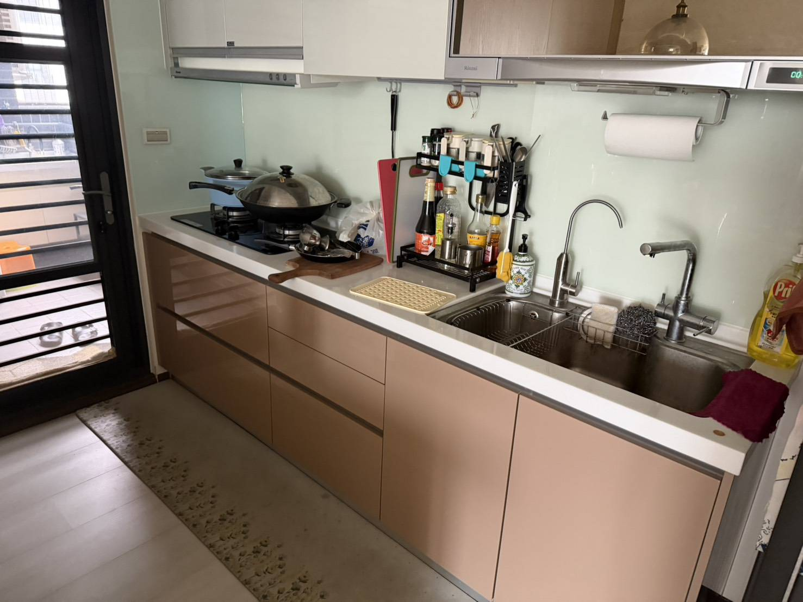
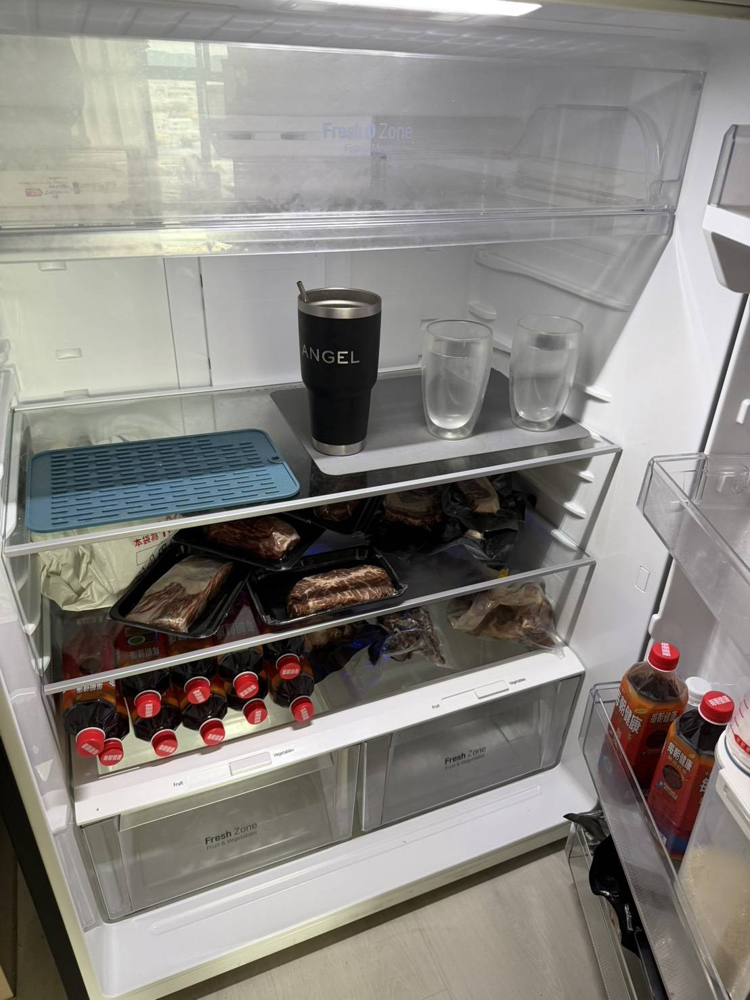
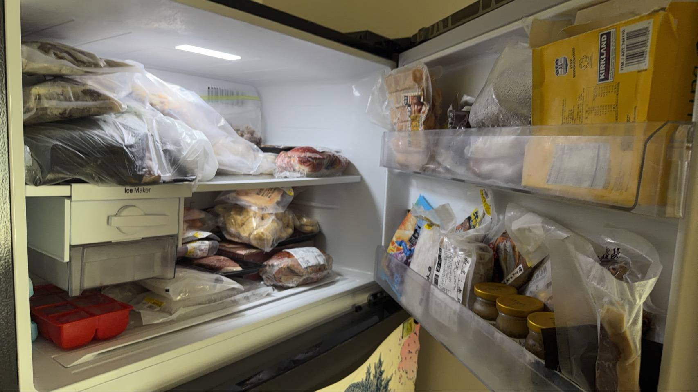
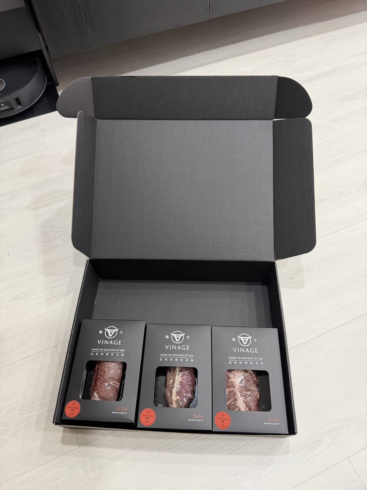

v2 合併｜原 3 鏡縮成 1 鏡（刪掉「走動」）；畫面重畫（新圖已補）
日常快剪 客廳
伸懶腰 → 拿起手機
✂ 跳剪｜兩刀：伸懶腰 → 拿起手機，整段約 2 秒
兩刀快剪：站在沙發旁自然伸個懶腰；接著拿起手機，看一下螢幕，往沙發走。
無台詞，日常動作快剪
表演 身體放鬆，不用刻意看鏡頭；兩個動作各約 1 秒，不用交代走位。
剪接／音效 開場直接進日常畫面，兩刀硬切、整段約 2 秒。原本的「走動」鏡頭沒有新資訊，刪掉。
VINAGE / SHOOTING GUIDE
酿牛
拍攝腳本.
輸入密碼查看影片腳本與拍攝參考。
VINAGE / SHOOTING SCRIPT
兩支影片的畫面、動作與台詞。下方也有穿搭、場景及商品參考。
01 / THE SCRIPTS
選擇影片後往下滑，依序查看畫面、走位、動作和台詞。
在家突然餓了，發現冰箱裡原本要送人的禮盒。先是猶豫、走開又回來；抽出一個單品盒後，下一鏡卻已經煎起來，還一本正經地說是幫對方試吃。吃完才發現禮盒少了一格，最後決定再買一盒。
FILM 01 / 參考影片
成片參考，直式，約 37 秒，含聲音。拍攝與剪接可對照節奏、畫面和台詞。
ACTING ROUTE / 動作與走位
客廳日常快剪 → 沙發發現肚子餓 → 冰箱猶豫 → 爐台料理 → 中島試吃、禮盒缺一格與下單 → 品牌收尾。往下滑查看每個動作、眼神與台詞；走位依現場確認。
人物與場景為依照新實景製作的 AI 分鏡示意；實際商品與尺寸以實拍為準。冰箱畫面示範表演與走位，圖中是單品與真空包裝；禮盒是否放得進冰箱，請依腳本備註於現場確認。禮盒為上層三盒、下層三盒，另有黑色保溫袋。少一盒的示意目前先放真實開盒照；下層是否露出及呈現方式依實物拍攝。回頭畫面停在回望，後退方向請依文字走位。
隨捲動切換畫面；文字為動作與台詞。
v2 合併｜原 3 鏡縮成 1 鏡（刪掉「走動」）；畫面重畫（新圖已補）
日常快剪 客廳
✂ 跳剪｜兩刀：伸懶腰 → 拿起手機，整段約 2 秒
兩刀快剪：站在沙發旁自然伸個懶腰；接著拿起手機，看一下螢幕，往沙發走。
無台詞，日常動作快剪
表演 身體放鬆，不用刻意看鏡頭；兩個動作各約 1 秒，不用交代走位。
剪接／音效 開場直接進日常畫面，兩刀硬切、整段約 2 秒。原本的「走動」鏡頭沒有新資訊，刪掉。
v2 合併｜原 3 鏡縮成 1 鏡；畫面重畫（新圖已補）
開場 客廳沙發
坐在棕色沙發上滑手機，滑到一半停住，手放到肚子上，低頭一下，再往廚房方向看；說完直接起身，往廚房與冰箱走。
「完了……突然好餓。」
表演 先感覺到餓，才說出口；日常自然，不必誇張。起身、轉身依現場空間調整。
剪接／音效 手機畫面停住，留一小拍；可微幅推近表情，台詞搭配字幕「突然好餓」；說完用起身動作直接切到冰箱前，保留腳步聲。
v2 修改｜冰箱裡改放黑色禮盒（新圖已補）
01 / 06 冰箱前
打開冰箱找東西，眼神停在冰箱裡的黑色禮盒上，酿牛標誌朝外。
「……不行，這是過年要送人的。」
表演 視線黏在禮盒上，是真的想吃，但先忍住。
剪接／音效 切冰箱內視角，讓禮盒標誌與視線同時入畫，留冰箱門聲。【待確認】六入大禮盒放不放得進冰箱；放不進就改放疊好的單品盒（開窗、標誌朝外），禮盒留到「缺一格」插入鏡頭再出現。
v2 合併｜原 02、03 合成 1 鏡（新圖已補）
02 / 06 冰箱前
她的手慢慢伸向禮盒，快碰到時停住；把手收回來，關上冰箱。
無台詞，以動作和停頓表現
表演 眼睛看著禮盒，嘴巴微抿，讓人看出她還在掙扎；關門時像在提醒自己：這是要送人的。
剪接／音效 切手與視線特寫，伸手時放慢一點，停住留半拍；接收手、關冰箱，保留關門聲；不用額外字卡。
v2 新圖｜畫面重畫（新圖已補）
03 / 06 冰箱外
她關上冰箱，轉身離開；以示意圖機位來看，面向畫面左側走兩步，冰箱留在她身後右側。
無台詞，以動作和停頓表現
表演 身體往前走，動作自然，不用刻意回頭。
剪接／音效 切回廚房側面機位，順著轉身動作接走開。
v2 合併｜原 05、06 合成 1 段；畫面重畫（新圖已補）
04 / 06 冰箱外 → 回冰箱
✂ 可硬切一刀｜回頭 → 倒退；也可以一鏡拍完，整段約 2 秒
腳步停住，肩膀和上半身一起輕輕轉向畫面右側的冰箱，視線自然跟過去；看一眼後把視線收回，沿剛才的路往後退回冰箱前，轉身面向冰箱，伸手打開。
無台詞，以動作和停頓表現
表演 像是走開了又忍不住想看一眼，再若無其事地退回來；肩頸放鬆，停半拍讓剪接接上；方向與步伐依現場走道調整。
剪接／音效 她停住後留半拍，微幅推近表情，再接回頭；回頭到倒退可以一鏡拍完，也可以硬切一刀，整段約 2 秒；接開門聲；可配一聲輕巧的提示音。
v2 修改｜改成抽出單品盒，看得到標誌（新圖已補）
05 / 06 冰箱前
她從禮盒裡抽出一個單品盒，標誌朝向鏡頭，開窗看得到牛排，低頭仔細看。
無台詞
表演 猶豫一下，眼神停在牛排上；接著直接切到下一個畫面。
剪接／音效 切冰箱視角與手上單品盒，猶豫停半拍；下一鏡直接跳到鍋中。
v2 合併｜原 08、09 合成 1 鏡；畫面重畫（新圖已補）
06 / 06 爐台
畫面直接切到牛排已在鍋裡滋滋作響。她拿料理夾，視線淡定地轉向鏡頭；說完把視線轉回鍋子，接料理特寫。
「送人的東西，總要先幫他試吃吧？」
表演 從拿著單品盒直接跳到下鍋；台詞講得認真、理直氣壯，不必先笑；眼神在鏡頭停一下，再回到鍋子。
剪接／音效 拿著單品盒直接跳切到下鍋，配合滋聲，讓前後反差成為笑點；台詞後切回鍋面，讓料理動作自然接下去。
v2 合併｜原「翻面」「淋奶油」合成 1 鏡；畫面重畫（新圖已補）
料理 廚房爐台
✂ 快剪｜夾起 → 翻面 → 淋奶油，兩個動作共約 2 秒
兩刀快剪：用料理夾把牛排翻面，鏡頭靠近鍋面；接著用淋勺把鍋裡的奶油淋到牛排上，拍到滋滋作響的畫面。
無台詞，保留煎肉聲與滋滋聲
表演 注意手部位置；動作俐落，眼神看著鍋子；料理特寫使用另外準備的已解凍牛排。
剪接／音效 料理特寫快剪：夾起、翻面、淋奶油，兩個動作共約 2 秒；保留煎肉聲與鍋中滋聲。
v2 修改｜補上盤子（對上畫面與後面的空盤）；畫面重畫（新圖已補）
料理 白色中島
牛排起鍋後放上木質切菜板，切開拍攝切面；切好的牛排移到旁邊的白色盤子。
無台詞，保留切肉聲
拍攝 中島作為料理與切肉位置，畫面以手部特寫呈現；切菜板旁先擺好空的白盤，接後面的試吃與空盤。
剪接／音效 硬切到切面特寫，保留刀具與切肉聲。
v2 新圖｜畫面重畫（新圖已補）
試吃 中島
拿起一小塊試吃，咀嚼後停半拍，眼睛自然亮起來。
「……好吃欸。」
表演 先感受味道再反應，不必刻意誇張。
剪接／音效 切人物第一口，反應停半拍後說台詞。
v2 修改｜視線改接禮盒（對上下一個插入鏡頭）；畫面重畫（新圖已補）
試吃 中島
✂ 跳剪｜吃一口 → 再一口 → 空盤，空盤出現後短暫停格
快剪再吃一口、又一口，接空盤；她看著空盤停住，想起這原本要送人。
「欸……少一塊怎麼送？」
表演 先看空盤愣一下，再把視線移向禮盒的方向，留半拍反差。
剪接／音效 吃一口、再一口的跳剪接空盤；空盤出現後短暫停格，搭配小問號字幕與輕巧提示音；視線移開的瞬間接下一鏡的插入畫面。
v2 新增｜插入鏡頭：禮盒缺一格（新圖已補）
插入 白色中島
插入鏡頭，另外擺好拍：中島上打開的大盒，裡面五個單品盒，一個位置是空的，標誌朝向鏡頭。這一鏡當作她的視線。
無台詞，接上一句「少一塊怎麼送？」
拍攝 此鏡沒有人物；禮盒與單品盒用現場實物，空出一格，其餘五個擺整齊。
剪接／音效 約 1 秒，接在她說完台詞、視線移開之後；可配一聲輕巧的提示音；事先擺好，單獨補拍。
v2 新圖｜畫面重畫（新圖已補）
結尾 中島
✂ 硬切｜手機特寫與人物反應之間
視線從空盤移到手機，拿起手機準備下單。
「算了，再買一盒。」
表演 想到解決辦法，動作俐落；畫面不需顯示虛構的購物頁面。
剪接／音效 硬切手機與人物反應，台詞落下後收尾；無需顯示購物頁面。
v2 新增｜補品牌鏡頭
收尾 商品與標誌
切酿牛商品實拍（大盒與單品盒、標誌清楚入鏡），搭配標誌字卡；不顯示虛構的購物頁面。
無台詞，保留現場聲音
備註 此鏡無人物。字卡文字與購買方式（網址、連結放哪）由品牌方確認；價格與規格在影片 2 才出現，這支不重複。
剪接／音效 約 1.5 秒；商品實拍特寫接標誌字卡，收在乾淨的品牌畫面。【待確認】購買資訊與字卡文字。
一支自然的居家開箱 Vlog：拿出牛排、比較大小，再把六個單品盒排開；開大盒時就看到六個單品盒，先比較一塊牛排的大小，再看六塊的份量，最後有點捨不得送。
ACTING ROUTE / 動作與走位
中島打開大盒、看到六個單品盒 → 拿出一個 → 手掌、手機與飲料比較並說出結論 → 把六個單品盒排開 → 看著手上的一個。
人物與場景為依照新實景製作的 AI 分鏡示意；禮盒內上層三盒、下層三盒，另有黑色保溫袋。開箱先看到上層，取起上層單品盒後可看到下層；商品比例與包裝以實拍為準。
隨捲動切換畫面；動作、眼神與台詞請看旁邊說明。商品實拍參考
v2 修改｜台詞對上動作，統一說「大盒／單品盒」；禮盒透視重畫（新圖已補）
開場 中島
鏡頭已經在拍，她把大盒拉到自己面前並打開，低頭看盒內六個單品盒，也讓鏡頭看到；說完再拿起其中一個單品盒。
「這一大盒裡面有六塊牛排。」
表演 低頭看大盒，自然分享看到的內容；台詞在看著盒內時說，手上還沒拿單品盒，避免被誤會成一盒有六塊；視線跟著商品，不急著看鏡頭。
剪接／音效 直接進開箱動作，保留盒蓋與包裝聲，建立 Vlog 感。
v2 修改｜台詞改成「至少」，和結尾字卡一致；畫面重畫（新圖已補）
開箱 中島
看著單品盒上的 8oz，從外盒抽出真空包裝牛排，拿近一點看。
「它一塊至少 8 盎司欸，我拿出來比一下。」
表演 低頭看著牛排，帶著好奇，不用刻意驚呼。
剪接／音效 接牛排與人物反應，動作停一下再說台詞。
v2 新圖｜畫面重畫（新圖已補）
比較 中島俯拍
將真空包裝牛排平放在中島，手掌自然放到牛排旁邊；低頭看一眼，稍微調整手的位置。
「等一下，我比給你們看。」
表演 手掌和牛排放在同一平面；鏡頭比較肉本身。
剪接／音效 切俯拍手和牛排；讓兩者同平面入鏡。
v2 新增｜補上標題問題的答案；畫面重畫（新圖已補）
比較 中島俯拍
✂ 跳剪｜手機 → 飲料罐依序跳剪，保留道具輕放聲
把手移開，順手拿比較用的手機放在牛排旁，再把飲料罐放到另一側。
「手機……」
「還有這個。」
「……比我手掌還大一圈欸。」
表演 放好後停半拍看看桌面；手機、飲料和牛排維持同一平面。【待實測】結論那句要先用實物量過再定；不符就改句子，不要改實物。
剪接／音效 手機、飲料依序跳剪，保留道具輕放聲；結論那句可搭配字幕「8oz ≈ 227 公克」（選用，上片前確認）。
v2 用詞｜大盒／單品盒；畫面重畫（新圖已補）
接續 中島
將手機和飲料推到旁邊，把剛比較的牛排放回單品盒，準備把大盒裡其他的單品盒拿出來排開。
無台詞，接排開商品的動作
表演 自然整理中島上的商品，接續開箱。
剪接／音效 切回人物中景，順著整理商品的動作接俯拍。
v2 用詞｜大盒／單品盒；畫面重畫（新圖已補）
排列 中島俯拍
✂ 快剪｜一個接一個排開，字幕數字 1 到 6，保留落桌聲
把手上的第一個單品盒放在中島，再從大盒拿出剩下五個單品盒，接在旁邊排開。
無台詞，配合節奏排列六個單品盒
表演 自然一個一個排開；畫面總共六個單品盒。
剪接／音效 一個接一個快剪，保留落桌聲；字幕數字隨每個單品盒出現，最後停在 6。
v2 用詞｜大盒／單品盒；畫面重畫（新圖已補）
反應 中島
站在中島後方，視線慢慢掃過排好的六個單品盒。
無台詞，讓鏡頭看清六塊份量
表演 看著桌面六個單品盒，稍停半拍，接著自然伸手拿起一個。
剪接／音效 切人物和六個單品盒同框，放慢半拍讓份量出現。
v2 用詞｜大盒／單品盒；畫面重畫（新圖已補）
結尾 中島
順手拿起離自己最近的一個單品盒，低頭看看包裝；其他五個留在中島。
「這個本來是要送人的欸……」
表演 動作放鬆，像是在繼續看剛開箱的東西；停半拍。
剪接／音效 接拿起單品盒與低頭看包裝；留下短暫停頓。
v2 用詞｜大盒／單品盒；畫面重畫（新圖已補）
結尾 中島
看一眼桌上剩下的五個單品盒，視線回到手裡那一個。
「可是我現在有點不想送了。」
表演 像不小心說出心裡話，說完自己笑一下；不用抱緊盒子或刻意裝心虛。
剪接／音效 接剩下的五個單品盒與她手上的那一個，讓台詞和笑容自然收尾。
收尾 商品特寫
使用真正的酿牛商品實拍特寫；獨立字卡顯示「每塊牛排至少 8oz」「大盒 6 塊｜$5,888」。
無台詞，保留動作與現場聲音
表演 此鏡無台詞。價格與規格以上片前確認為準。
剪接／音效 切實際商品特寫與資訊字卡；規格、價格以上片前確認為準。
不用人
先拍商品特寫；禮盒缺一格拍完後放回。



LOOK 02 · 淺色襯衫 × 長褲
先完成開箱與份量比較，保持桌面乾淨。



LOOK 01 · 短袖寬鬆連身裙、頭髮收整
換造型：LOOK 02 淺色襯衫 × 長褲 → LOOK 01 短袖寬鬆連身裙、頭髮收整。


沿用 LOOK 01
用另外解凍的牛排；開火煎肉放最後。


ON LOCATION / 拍攝環境
以下是最新提供的客廳、廚房與冰箱照片。實際機位及走位依拍攝現場確認。







第一支在客廳與沙發開場，接著往廚房與冰箱走。
第二支在中島開箱與比較大小；第一支可在此試吃及補拍禮盒畫面。
照片可見冷藏室中的真空包裝牛排；冰箱戲的商品擺放方式依拍攝安排與現場確認。
THE REAL PRODUCT / 真實商品
參考實際包裝與牛排外觀；六入禮盒為上層三盒、下層三盒，另附保溫袋。腳本用詞：大盒＝六入禮盒；單品盒＝裝一塊牛排的開窗盒；托盤＝真空包裝的黑色托盤。


手持實拍照可參考單品盒與雙手的相對大小；六入大禮盒的尺寸與排列以現場實物為準。